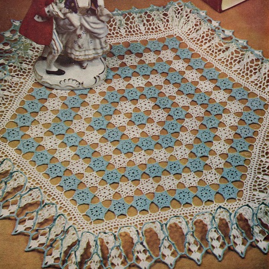

Ruffled Hexagon Doily Pattern
MATERIALS:
DAISY Mercerized Crochet Cotton, Art. 65:-2 skeins White and 1 skein Turquoise, size 30;
or
DAISY Mercerized Crochet Cotton, Art. 97:-2 balls each White and Turquoise, size 30;
or
Lily MERCROCHET Cotton, Art. 161;-2 balls each White and Turquoise, size 30.
Steel crochet hook No. 13.
SIZE:-17 to 19 inches.
Starting in center: COLORED MOTIF: With Turquoise, ch 8, join with sl st to form ring.
1st Rnd: Ch 1, 12 sc in ring, join with sl st in 1st sc.
2nd Rnd: Ch 1, sc in same st, (sc in next 2 sc, ch 6, sc in same sc with last sc) 5 times, sc in next 2 sts, ch 4, join with hdc in 1st sc.
3rd Rnd: Ch 3, (in next ch-6 lp make 4 dc, ch 3, 4 dc) 5 times. In final lp make 4 dc, ch 3, 3 dc, join with sl st in top of 1st ch-3. Cut 6 inches long, thread to a needle and fasten off on back.
WHITE MOTIF: With White repeat 1st and 2d rnds.
3rd Rnd: Ch 3, (in next ch-6 1p make dc, ch 2, dc, ch 3, dc, ch 2, dc) 5 times. In final lp, make dc, ch 2, dc, ch 1, sl st in a corner ch-3 on Colored Motif, ch 1, dc back in same lp on White Motif, ch 2, join with sl st in top of 1st ch-3. Fasten off in same way, carrying thread down back to center ring to fasten. * Make another White Motif, joining it to the next corner on Colored Motif and to the next free corner on previous White Motif. Repeat from * 3 times. Make a 6th White Motif, joining it to 1st and 5th White Motifs and to remaining corner on Center Motif, completing row.
3rd ROW: Make a Colored Motif, joining it to 1 corner each on 2 adjoining White Motifs. * Make another Colored Motif, joining it to 1 corner of previous Colored Motif and to the next corner of same White Motif. Make another Colored Motif, joining it to one corner of previous Colored Motif, to the corner of same White Motif and to the next corner of the following White Motif. Repeat from * around, joining 12th Motif to 1st Motif.
4th ROW: Make 18 White Motifs (1 more on each side than in last row), always starting each row by joining 1st Motif to 1 corner each of 2 adjoining Colored Motifs.
5th ROW: 24 Colored Motifs (1 more on each side than in last row), starting in same way as in last row.
6th ROW: 30 White Motifs.
7th ROW: 36 Colored Motifs.
RUFFLE Join White to center point on one corner Motif, ch 8, dc in same place, * (ch 10, dc in next point, ch 8, dc in 1st point on next Motif) 6 times, ch 10, (dc, ch 5, dc) in next (corner) point. Repeat from * around, join to 3d st of ch-8.
2nd Rnd: Sc in next sp, ** (ch 4, sc in same sp) 3 times, ch 4, sc in next sp, (ch 4, sc in same sp) 3 times, ch 4, sc in next sp, (ch 4, sc in same sp) twice. Repeat from * across to next corner sp. Repeat from ** around, ch 4, join to 1st sc.
3rd Rnd: Sl st to center of next lp, ch 4, hdc in next (corner) lp, * ch 3, hdc in same lp, (ch 2, hdc in next lp) repeated to center lp at next corner. Repeat from * around, ch 2, join to 2d st of ch-4.
4th Rnd: 3 sc in next sp, * 5 sc in next (corner) ch-3 sp, (3 sc in next sp) repeated to last sp before corner sp. Repeat from * around. Sl st in 1st 2 sc.
5th Rnd: Ch 5, dc in next sc, (ch 2, dc in next sc) 3 times to center sc at corner, * ch 2, dc in same corner Sc, (ch 2, dc in next sc) 4 times, (ch 2, sk 2 sc, dc in next sc) repeated across to last sp before corner sp, (ch 2, dc in next sc) 4 times to center sc at corner. Repeat from * around, ch 2, join to 3d st of ch-5.
6th Rnd: Sc in next sp, ch 3, (dc, ch 3, 2 dc) in same sp, * (ch 5, dc in next sp) 3 times, ch 5, in next sp make a 2 dc, ch 3, 2 dc shell. Repeat from * around, ch 5, join to top of ch-3, sl st to center sp of same shell.
7th Rnd: Ch 5, (2 tr, ch 3, 3 tr) in same place, * (ch 6, dc in next sp) 4 times, ch 6, in next shell make a 3 tr, ch 3, 3 tr shell. Repeat from * around, join to top of ch-5, sl st to center of same shell.
8th Rnd: Repeat last row to *. * (Ch 7, dc in next sp) 5 times, ch 7, a 3 tr, ch 3, 3 tr shell in next shell. Repeat from * around, join, sl st to center of same shell.
9th Rnd: Ch 5, (3 tr, ch 5, 4 tr) in same place, * (ch 8, dc in next sp) 6 times, ch 8, a 4 tr, ch 5, 4 tr shell in next shell. Repeat from * around, join, sl st to center of same shell.
10th Rnd: Repeat last row but with 8 ch-9 lps between shells.
11th Rnd: Ch 5, (4 tr, ch 6, 5 tr) in same shell, * (ch 10, dc in next sp) 8 times, ch 10, a 5 tr, ch 6, 5 tr shell in next shell. Repeat from * around, join and fasten off.
Edge Join Turquoise to 1st tr on one shell, ch 1, sc in same tr, sc in next 4 tr, 4 sc in half of next sp, ch 5, sl st in last sc for a p, 3 sc in bal. of sp, sc in next 5 tr, (6 sc, a p, 5 sc) in each of next 8 sps, 6 sc in half of next sp, ch 2, sl st back in 8th p from hook, ch 2, sl st back in last sc, 5 sc in bal. of sp, * sc in next 5 tr, (4 sc, a p, 3 sc) in center of shell, sc in next 5 tr, (6 sc, a p, 5 se) in each of next 2 sps, 6 sc in half of next sp, ch 2, sk last joining of ps, sl st back in 2d previous p, ch 2, sl st back in last sc, 5 sc in same sp, (6 sc, a p, 5 sc) in each of next 5 sps, 6 sc in half of next sp, ch 2, sl st back in 1st p to left of last shell, ch 2, sl st back in last sc, 5 sc in bal. of same sp. Repeat from * around. Fasten off. Tack 1st and last ripples tog. in pattern.
Starch doily. When partially dry, stretch and pin it right-side-up in true shape, putting a pin in each shell point around ruffle. Crush a small piece of tissue paper and tuck in each top ripple of ruffle. Let stand until dry.
HOME